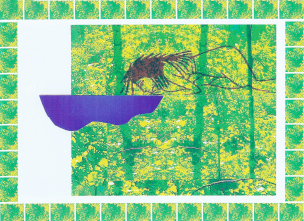

Gary LeBel
Cumming, Georgia, U.S.A.
Untitled
After a long upwards climb and down a steep wash, at last, the river. Like the air that pours from the mouth of a tunnel, cool breezes flow under the canopies of old-growth cedars along the banks carrying a drift of upland fragrances. The surrounding summer forest breaks into myriad bits of yellow and yellow-green. Almost noon, cicadas, birds and foliage at the Goatfoot’s beloved hour lie hushed in reverent comas:
though it’s been nearly a month now, I sense he’s here, as generous with his presence as these cedars let fall their rains of shade,
gazing through these eyes, listening through these ears,
in this
the immortality we bestow
yet cannot know—
sun-warmed stone
|